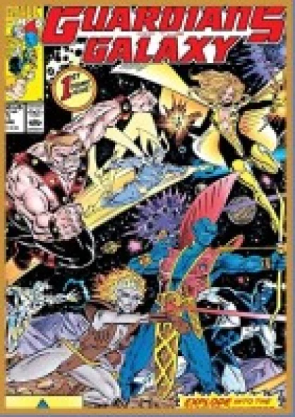
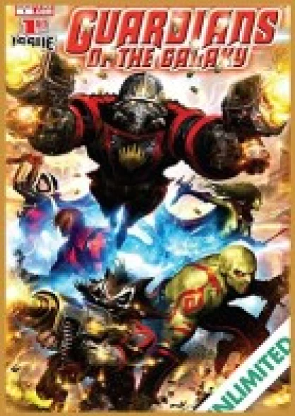
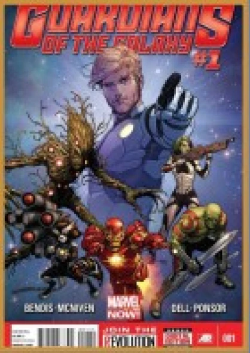
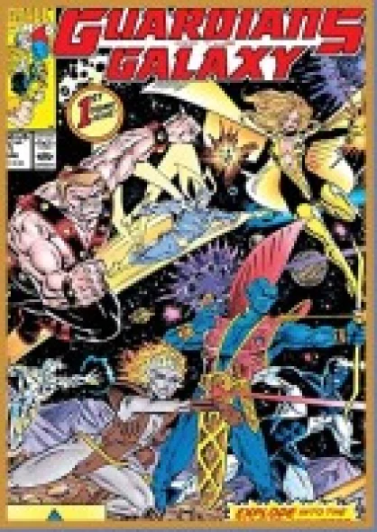
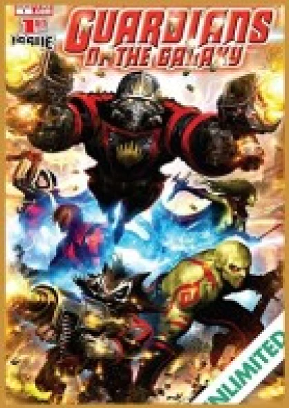
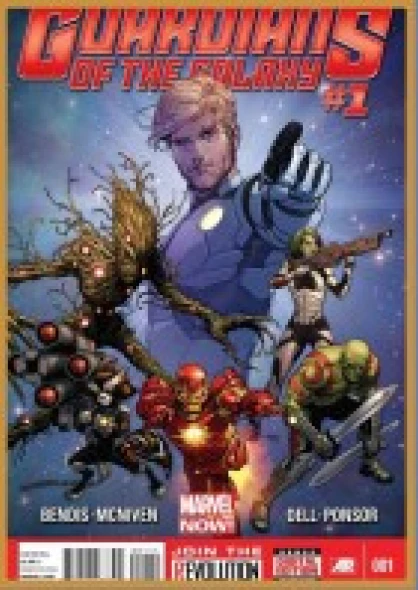
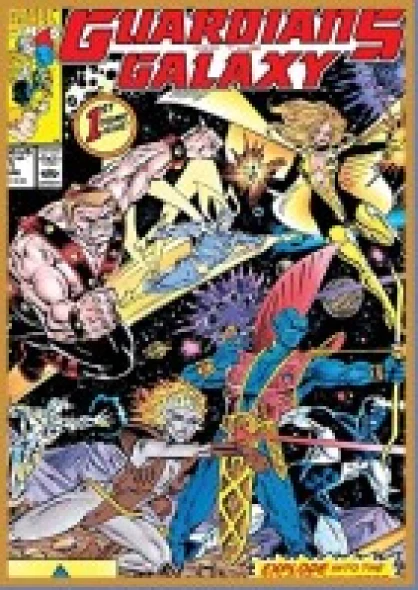
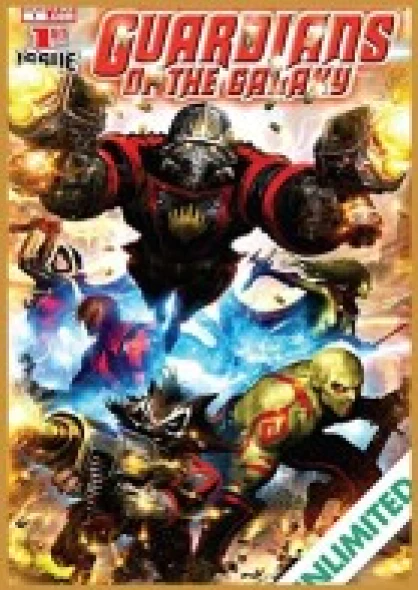
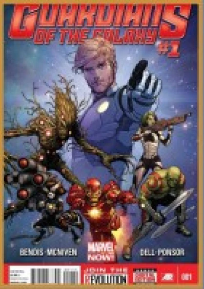

À découvrir aussi
Ce site vous a plu ? Vous en voulez plus ? Découvrez les autres projets sur le même thème !
Suivez les aventures des Gardiens de la Galaxie !

 







Ce site vous a plu ? Vous en voulez plus ? Découvrez les autres projets sur le même thème !


